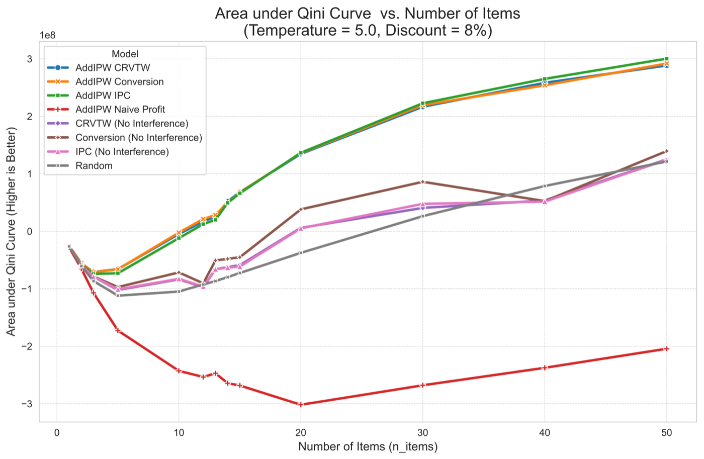
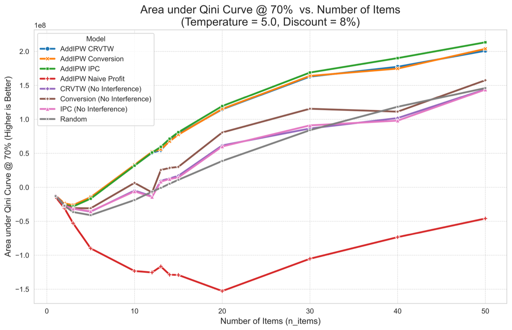
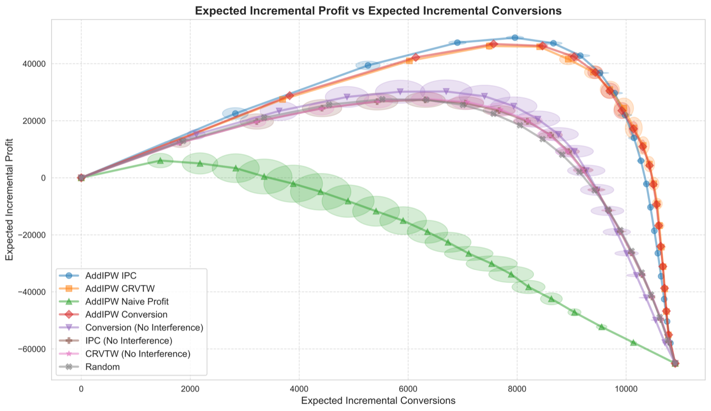

- 商品ごとの結果ではなくクラスタ平均で学ぶ各商品の処置を同じユーザーに見せた商品全体の平均結果 \(\overline{Y}_i\) で重みづけして学習する。応答変換の目的値を入れ替えるだけで、干渉を考慮した形になる。
- 利益の手法も同じ枠組みに入るCRVTW（売上）と IPC（購入のあったクラスタの利益）を、目的値をクラスタ平均に替えて組み込む。観測利益をそのまま入れる方法は失敗しやすいと論文は述べる。
- クラスタが大きいほど差が広がるシミュレーションでは、1 クラスタの商品数が増えるほど、AddIPW 系と干渉を考慮しない手法の Qini 曲線下面積の差が大きくなった（論文 Fig. 1）。
クーポンを付けた商品の売上が増えても、同じユーザーの別の商品から購入が移っただけかもしれない
アップリフトモデリングは、割引やクーポンといった処置が個々の行動に与える因果効果を推定し、利益や投資収益率が高くなるように処置の優先順位を決める方法である。従来の手法の多くは SUTVA（Stable Unit Treatment Value Assumption）を前提にしている。ある単位への処置がほかの単位の結果に影響しないという仮定である。
実際のマーケットプレイスでは、ある商品を値引きすると、別の商品の売上を奪うことがある（カニバリゼーション）。論文はこれを扱うために、クラスタ型ネットワーク干渉の仮定を採る。EC サイトなら、1 人のユーザーに見せた商品全体を 1 つのクラスタとみなす。ある商品の値引きは、そのユーザーがどの商品を買うかには影響するが、ほかのユーザーの購入には影響しないとする。
干渉のもとで方策を評価する AddIPW はあるが、それで方策を学習して利益を狙う方法は確立していない
論文はクラスタ型干渉に関する先行研究の記法に従う。\(n\) 個の独立なクラスタ（ユーザー）\(i\) があり、クラスタ \(i\) は \(M_i\) 個の単位（商品）\(j\) を含む。単位ごとに処置前の共変量 \(X_{ij}\)、二値の処置 \(A_{ij}\)、結果 \(Y_{ij}\)（その商品が購入されたか）を観測する。クラスタの結果は平均 \(\overline{Y}_i = \frac{1}{M_i}\sum_j Y_{ij}\) である。傾向スコア \(e_j(a\mid X_i) = P(A_{ij}=a\mid X_i)\) は、クラスタ全体の共変量 \(X_i\) で条件づける。
Zhang と Imai が提案した AddIPW（Additive Inverse Propensity Weighting）は、結果が加法的に決まるというモデルを仮定して、方策 \(\pi\) の価値を次のように推定する。
クラスタ全体を重みづけする従来の IPW では、重みがクラスタの大きさに対して指数的に大きくなる。AddIPW の重みは線形にしか増えないので、はるかに効率がよい。Karlsson らはこの推定量で Qini 曲線を推定する方法を示した。ただし AddIPW には費用の項がなく、利益のような経済的な指標にそのまま使うことはできない。論文は評価に使われてきた AddIPW を方策の学習に使い、利益を目的にできるようにすることを目指す。
方策に依存する項だけを残すと、AddIPW の最大化はクラスタ平均で重みづけした学習になる
方策に依存しない定数を除き、二値の方策について指示関数を展開すると、最大化する目的は次の形になる。離散的な方策 \(\pi(X_{ij})\) を処置の確率を表す微分可能な関数 \(f_\theta(X_{ij}) \in [0,1]\) に置き換えれば、ロジスティック回帰や勾配ブースティング決定木を勾配法で学習できる。
処置の確率が一律 0.5 の RCT では、重みは \(w_{ij} = 4A_{ij}-2\) になる。このとき \(\overline{Y}_i(2A_{ij}-1)\) を事例の重みとする通常の教師あり学習とみなせる。ただし、この簡単な形が成り立つのは \(e_j = 0.5\) の場合だけで、論文の実装は一般形を使う。
同じ目的は応答変換としても書ける。次の変換変数 \(Z_{ij}\) について \(\sum_{i,j} Z_{ij} f_\theta(X_{ij})\) を最大化すると、上の目的と同じになる。
標準的な応答変換との違いは個々の結果 \(Y_{ij}\) ではなくクラスタの平均 \(\overline{Y}_i\) を使う点にある。これで各商品への処置は、カニバリゼーションのような影響も含めて、クラスタ全体に与えた影響で評価される。
利益を狙うときは観測利益をそのまま入れず、既存の利益アップリフト手法の目的値をクラスタ平均に置き換える
素朴には、\(\overline{Y}_i\) をクラスタの平均利益 \(\overline{Y}_{p,i} = \overline{Y}_{r,i} - \overline{Y}_{c,i}\)（売上 − 費用）に置き換えればよさそうに見える。しかし論文は、この方法はうまくいかない可能性が高いと述べる。処置した商品は割引の費用の分だけ観測利益が低くなる。そのためモデルは処置による増分を取り出せないまま、処置した商品を不利に扱うことを学んでしまう。
論文は目的値をクラスタ平均に置き換える形で、次の 3 つを挙げている（\(w_{ij}\) は上と同じ重み）。
- AddIPW Naive Profit：目的値をクラスタの平均利益 \(\overline{Y}_{p,i}\) にする。上で述べた素朴な方法である。
- AddIPW CRVTW：Gubela らの CRVTW（Continuous Response Variable Transformation with Weightings）にならい、目的値をクラスタの平均売上 \(\overline{Y}_{r,i}\) にする。
- AddIPW IPC：Proença と Moraes の IPC（Incremental Profit per Conversion、解説ページ）にならい、1 件以上の購入があったクラスタだけを使う。目的値は、購入したすべての単位に処置の費用がかかったと仮定したクラスタの平均利益である。
IPC 版で最大化する目的は次のとおりである。
公開の干渉シミュレータで、クラスタの大きさを変えながら方策を Qini 曲線で比べた
実験には、Karlsson らが公開したシミュレーション環境（bookingcom/uplift-interference-simulator）を使う。干渉のモデルは softmax-exponential-decay で、softmax の温度は 5.0 である。サンプル数は 100,000 で、クラスタの大きさをさまざまに変える。処置は商品に 8% の割引を付けることにあたる。
比べるのは、提案した AddIPW-CRVTW と AddIPW-IPC、それぞれの干渉を考慮しない元の手法、ランダムな方策、コンバージョンを目的にした AddIPW、\(\overline{Y}_{p,i}\) をそのまま最大化する AddIPW Naive Profit である。図の凡例には干渉を考慮しないコンバージョンのモデルも含まれている。
評価には Qini 曲線を使う。予測したアップリフトの大きい順に並べて上位の割合 \(\phi\) を処置する方策を、\(\phi = 0, 0.05, \ldots, 1.0\) の 5% 刻みで描く。論文は増分コンバージョンと、増分コンバージョン 1 件あたりの増分利益（損失）で方策を比べると述べている。
以下の内容は arXiv v1（2025 年 9 月 1 日）の本文と図による。本文に数値の表はなく、結果は図だけで示されている。このページでは図から値を読み取らず、本文の記述を紹介する。ワークショップの出版版は確認できなかった。
クラスタが大きいほど干渉を考慮した手法の優位が広がり、処置する割合が小さい範囲では AddIPW-IPC の利益が高かった
図2 では、クラスタの大きさ（1 クラスタの商品数）が増えるほど、干渉を考慮しない手法と AddIPW 系の手法の差が大きくなる。一方、AddIPW 系どうし（コンバージョン、IPC、CRVTW を目的にしたもの）の差は小さい。論文は、AddIPW-IPC がほかの 2 つを小さいながら有意に上回ったと述べるが、有意性の検定方法は本文に書かれていない。
処置する割合が小さいところでは、AddIPW-IPC の優位がより大きい。クラスタの大きさ 40 で学習したモデルの Qini 曲線（図4）では、アップリフトの最も大きい対象に絞ったときに AddIPW-IPC の利益が高い。優先順位の上位 70% までに絞った曲線下面積（図3）でも、AddIPW-IPC の優位がよりはっきり出る。論文はこれを特に興味深い点としている。購入のなかったクラスタを捨てるので、AddIPW-IPC はほかの AddIPW 系よりずっと少ないデータで学習しているからである。



図2〜4 では、AddIPW Naive Profit の曲線がランダムな方策より下にある。観測利益をそのまま入れると失敗しやすいという手法の節の議論に合う結果だが、本文はこの曲線について直接は述べていない。また、図2・図3 の縦軸が増分コンバージョンと増分利益のどちらの Qini 曲線の面積なのかは、本文と図に明記されていない。
論文は予備実験で softmax の温度を低くすると、AddIPW が素朴な手法を常に上回るわけではなかったと報告している。干渉が弱くなり、分散の小さい素朴な手法が有利になるためだろうと推測している。評価はシミュレーションだけで、大規模な本番環境での検証は今後の課題とされている。
予算の上限は置かず、干渉を考慮したスコアで並べて、上位の割合ごとに評価する
- 推定するもの：各商品に処置する確率 \(f_\theta(X_{ij})\)、つまり方策そのもの。CATE や費用対効果を推定してから並べるのではなく、AddIPW で推定した方策の価値を直接最大化する。評価ではこのスコアの大きい順に並べる。
- コストの扱い：費用は目的値の中で差し引かれる。CRVTW 版は売上だけを使い、費用を含まない。IPC 版は、購入した単位に処置の費用（実験では 8% の割引）がかかったと仮定した利益を使う。Naive Profit 版は観測された費用を差し引く。
- 処置：商品ごとの二値（割引を付けるか）。干渉はクラスタ（ユーザー）の中だけで起き、クラスタの間にはないと仮定する。データはシミュレーションだけである。
- 予算制約：最適化の制約としては扱っていない。上位 \(\phi\) を処置する方策を 5% 刻みで比べることで、さまざまな規模の配布での性能を見ている。結論では、最も効果の大きい処置を優先する必要がある予算の限られた用途で特に有利だと述べている。
ROI 順の割り当て（ナップザック問題の連続緩和）では、増分の成果を増分の費用で割った比の大きい順に処置する。この論文のスコアはこの比を推定しておらず、費用は目的値の利益から差し引かれるだけである。また、学習の目的は \(f_\theta\) について線形で予算の制約もない。そのため、目的を厳密に最大化する方策は、\(X_{ij}\) を条件とする \(w_{ij}\overline{Y}_i\) の期待値が正なら 1、負なら 0 になる。上位 \(\phi\) に絞ったときの並び順の良さは、目的関数が直接求めている性質ではない（解説者の注）。
@misc{vandenakker2025direct,
title = {Direct Profit Estimation Using Uplift Modeling under Clustered Network Interference},
author = {van den Akker, Bram},
year = {2025},
eprint = {2509.01558},
archivePrefix = {arXiv},
primaryClass = {cs.LG},
doi = {10.48550/arXiv.2509.01558},
note = {CONSEQUENCES Workshop @ RecSys 2025}
}
ワークショップの出版版の DOI は見つからなかったため、arXiv の情報で記載した。ワークショップ名は arXiv v1 の書誌情報による。